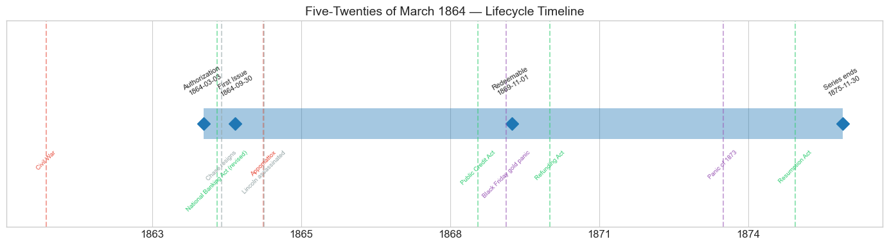
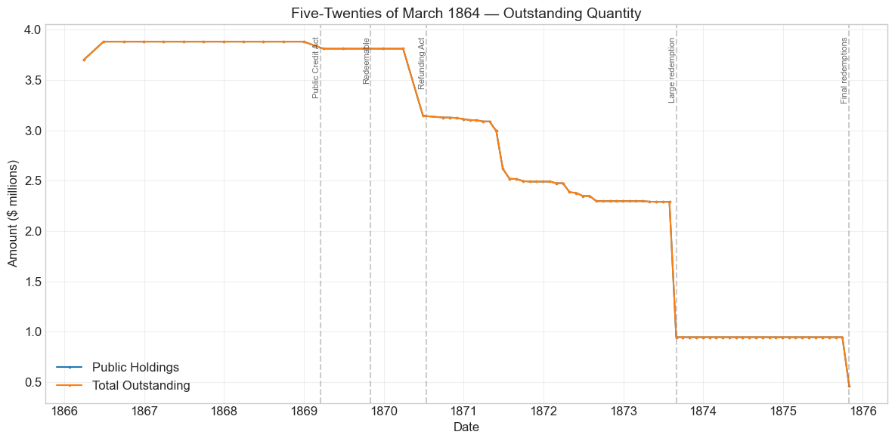
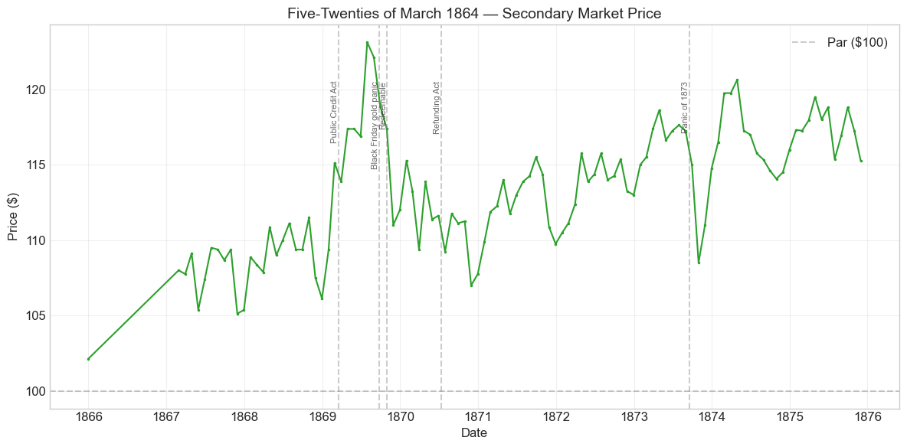
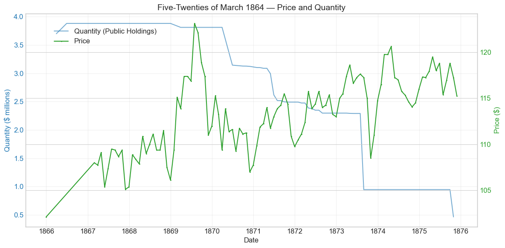
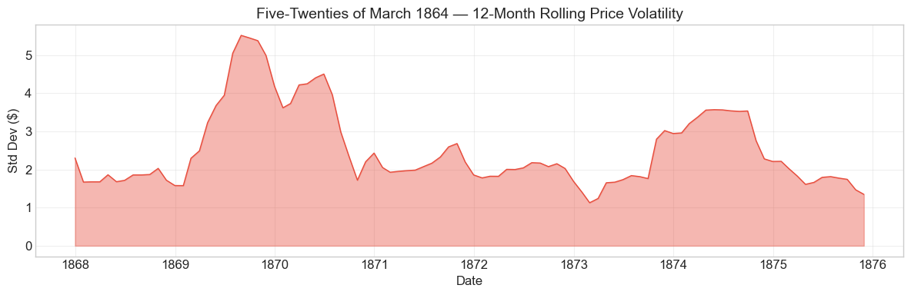

Bond Biography: Five-Twenties of March 1864#
The Little Loan Between the Giants#
Enhanced from the Hall-Payne-Sargent US Federal Bond Database (2,857 issues, 1776–1960)
Bond ID (L1): 20109 Category: Interest Bearing > Marketable > Long Term Bond Coupon: 6% semi-annual (May 1 and November 1), payable in coin Term: 5-year call / 20-year maturity — redeemable after November 1, 1869, payable November 1, 1884 Authorization: Act of March 3, 1864
import pandas as pd
import numpy as np
import matplotlib.pyplot as plt
import matplotlib.patches as mpatches
import datetime
import warnings
warnings.filterwarnings('ignore')
plt.style.use('seaborn-v0_8-whitegrid')
plt.rcParams.update({'figure.figsize': (12, 6), 'font.size': 12,
'axes.titlesize': 14, 'axes.labelsize': 12})
# Load the bond database
store = pd.HDFStore('../data/BondDF.h5', mode='r')
BondList = store['BondList']
BondQuant = store['BondQuant']
BondPrice = store['BondPrice']
store.close()
BondQuant_T = BondQuant.transpose()
BondPrice_T = BondPrice.transpose()
bond_id = 20109
print(f'Loaded data for: Five-Twenties of March 1864 (ID: 20109)')
/Users/thomassargent/anaconda3/lib/python3.9/site-packages/pandas/core/arrays/masked.py:60: UserWarning: Pandas requires version '1.3.6' or newer of 'bottleneck' (version '1.3.5' currently installed).
from pandas.core import (
Loaded data for: Five-Twenties of March 1864 (ID: 20109)
Overview#
The Five-Twenties of March 1864 were authorized under the Act of March 3, 1864 — the same statute that created the Ten-Forties (see the companion chapter on Bond 20108). The bonds carried the classic five-twenty structure of the Civil War sixes: a 6 percent coupon paid semi-annually in coin (May 1 and November 1), redeemable at the government’s pleasure after five years (November 1, 1869) and payable in twenty (November 1, 1884). The database records a first issue date of September 30, 1864. During its lifetime on the secondary market the bond’s average price was \(113.25, ranging from \)102.12 to \(123.12 (107 monthly observations from December 1865 to November 1875). Peak outstanding reached just **\)3.88 million** on June 30, 1866.
That last number is the story. Where the Five-Twenties of 1862 (Bond 20101) ran past \(500 million and the Ten-Forties were authorized for \)200 million, the Five-Twenties of March 1864 amounted to less than four million dollars — under one percent of the size of their famous 1862 namesake. They were a bridge issue: a small tranche of 6 percent five-twenty bonds put out under the March 1864 act in the interval between the exhaustion of the great $500 million loan of 1862 and the new six per cent authorizations of June 30, 1864 and March 3, 1865. The act of March 3, 1864 had given Secretary Salmon P. Chase wide discretion — bonds at not more than 6 percent, redeemable and payable at terms of his choosing — and Chase used it principally for his 5 percent ten-forty experiment. But the market’s cool reception of the fives, at the very moment Grant’s Overland Campaign was consuming money at an unprecedented rate, obliged the Treasury to keep selling sixes as well; the few million dollars of five-twenty bonds issued under the act are the residue of that necessity. Standard accounts (Bayley 1881; Dewey 1918) treat the issue as a minor administrative tranche rather than a loan campaign in its own right, and the precise circumstances of its placement are thinly documented; where the record is thin, this chapter lets the database speak and hedges accordingly.
What makes the bond worth a chapter is precisely its smallness. The Hall-Payne-Sargent database prices not only the celebrity loans but the minor tranches that shared the market with them, and the Five-Twenties of March 1864 offer a clean test of a proposition that the big issues cannot test alone: did the market price the promise or the size? The answer, developed below, is emphatic — this $3.9 million orphan traded month after month within about a point of its half-billion-dollar siblings.
Historical Context#
The following major events occurred during this bond’s lifetime:
Date |
Event |
Category |
|---|---|---|
1861-04-12 to 1865-04-09 |
Civil War |
War |
1864-03-03 |
Authorizing act (ten-forties and this issue) |
Legislation |
1864-06-03 |
National Banking Act (revised) |
Legislation |
1864-06-30 |
New 6% loan act; Chase resigns the Treasury |
Legislation / Other |
1865-04-09 |
Lee surrenders at Appomattox |
Military |
1865-04-14 |
Lincoln assassinated |
Other |
1869-03-18 |
Public Credit Act |
Legislation |
1869-09-24 |
Black Friday gold panic |
Crisis |
1869-11-01 |
Bonds become redeemable |
Other |
1870-07-14 |
Refunding Act (5s, 4.5s, 4s authorized) |
Legislation |
1873-09-18 to 1879-03-01 |
Panic of 1873 / Long Depression |
Crisis |
1875-01-14 |
Specie Payment Resumption Act |
Legislation |
Three episodes deserve particular emphasis for this bond:
The Civil War’s final year (1864–65). The bonds were born in the most expensive spring of the war. In early 1864 Union expenditures were running on the order of \(2 million a day and rising toward Grant's Virginia campaign; the gold premium reached its wartime extreme that summer, with the greenback worth barely 40 cents in gold at the July 1864 trough. Every quotation in this chapter must be read through the **greenback lens** shared with the companion chapters on the Five-Twenties of 1862 (Bond 20101) and the Ten-Forties (Bond 20108): from 1862 until resumption in 1879, New York prices for coin bonds were quoted in paper currency, so a coin bond's paper price rose when the greenback weakened and fell when it strengthened --- often producing "good-news price drops" on Union victories. The database's price series for this small issue begins only in December 1865, at \)102.12, so the wartime whipsaw itself is largely absent from the record; what the series captures is the postwar career of a seasoned 6 percent coin bond.
The Public Credit Act and Black Friday (1869). The Act of March 18, 1869 — President Grant’s first signed law — pledged coin payment of the principal of the public debt, resolving in gold’s favor the ambiguity that had hung over every five-twenty since 1862 (the gold-versus-greenbacks war chronicled in the 20101 chapter). This bond repriced exactly as its giant siblings did: a run-up in early 1869, a summer rally to the all-time peak of $123.12 in July 1869, and then a sharp setback after the Black Friday gold corner of September 24, 1869, when the Gould-Fisk operation and the Treasury’s retaliatory gold sales briefly disordered the relationship between gold, greenbacks, and coin bonds. The November 1869 quotation was down 5.4 percent from October — a valuation-unit shock, not a credit event.
The refunding era and the Panic of 1873 (1870–75). The Refunding Act of July 14, 1870 authorized new 5s, 4.5s, and 4s to replace the wartime sixes, and from 1871 the Treasury began calling five-twenties at par. As a callable 6 percent bond in a world where the government could increasingly borrow at 5, the Five-Twenties of March 1864 lived under a ceiling: the price never regained its 1869 peak, and the quantity series records the issue being nibbled away — and twice bitten deeply — by redemptions. The Panic of September 1873, triggered by the failure of Jay Cooke & Co., shows up as a 5.7 percent price drop in October 1873, mirroring the identical move in the 5-20s of 1862, before the low interest rates of the Long Depression floated all coin bonds back to a premium.
# Bond Lifecycle Timeline
fig, ax = plt.subplots(figsize=(14, 4))
# Key dates
dates = [('Authorization', '1864-03-03'), ('First Issue', '1864-09-30'), ('Redeemable', '1869-11-01'), ('Series ends', '1875-11-30')]
events = [('Civil War', '1861-04-12', 'war'), ('National Banking Act (revised)', '1864-06-03', 'legislation'), ('Chase resigns', '1864-06-30', 'other'), ('Appomattox', '1865-04-09', 'war'), ('Lincoln assassinated', '1865-04-14', 'other'), ('Public Credit Act', '1869-03-18', 'legislation'), ('Black Friday gold panic', '1869-09-24', 'crisis'), ('Refunding Act', '1870-07-14', 'legislation'), ('Panic of 1873', '1873-09-18', 'crisis'), ('Resumption Act', '1875-01-14', 'legislation')]
import matplotlib.dates as mdates
from datetime import datetime
# Plot bond lifetime bar
d0 = datetime.strptime(dates[0][1], '%Y-%m-%d')
d1 = datetime.strptime(dates[-1][1], '%Y-%m-%d')
ax.barh(0, (d1 - d0).days, left=mdates.date2num(d0), height=0.3,
color='#1f77b4', alpha=0.4, label='Bond Lifetime')
# Mark key dates
for label, date_str in dates:
d = datetime.strptime(date_str, '%Y-%m-%d')
ax.plot(mdates.date2num(d), 0, 'D', color='#1f77b4', markersize=10)
ax.annotate(f'{label}\n{date_str}', (mdates.date2num(d), 0.25),
ha='center', va='bottom', fontsize=8, rotation=30)
# Mark historical events
colors = {'war': '#e74c3c', 'crisis': '#9b59b6', 'legislation': '#2ecc71', 'other': '#95a5a6', 'monetary': '#f39c12'}
for name, date_str, cat in events:
d = datetime.strptime(date_str, '%Y-%m-%d')
ax.axvline(mdates.date2num(d), color=colors.get(cat, 'gray'), alpha=0.5, linestyle='--')
ax.annotate(name, (mdates.date2num(d), -0.25), ha='center', va='top',
fontsize=7, rotation=45, color=colors.get(cat, 'gray'))
ax.set_yticks([])
ax.xaxis.set_major_formatter(mdates.DateFormatter('%Y'))
ax.set_title('Five-Twenties of March 1864 — Lifecycle Timeline')
ax.set_ylim(-1, 1)
plt.tight_layout()
plt.show()

Bond Features#
Feature |
Detail |
|---|---|
Name |
Five-Twenties of March 1864 |
Authorizing Act |
March 3, 1864 |
Authorization Date |
March 3, 1864 |
First Issue Date |
September 30, 1864 (database convention) |
Term |
5 or 20 years |
Redeemable After |
November 1, 1869 |
Payable Date |
November 1, 1884 |
Coupon Rate |
6.0% |
Payment Frequency |
Semi-annual (May 1 and November 1), in coin |
Callable |
Yes (after November 1, 1869, at par) |
Payable in Coin |
Coupons: Yes. Principal: initially ambiguous, as with the other five-twenties; resolved by the Public Credit Act of 1869 |
Authorized Amount |
Under the $200 million Act of March 3, 1864 (shared with the ten-forties); no separate ceiling recorded |
Price Sold |
Par (1.0) |
Peak Outstanding |
$3.88 million (June 30, 1866) |
Disposition |
Retired by calls and redemptions during the 1870s refunding; database series ends late 1875 with $0.46 million on the books |
Note the family resemblance and the one telling difference. The coupon, the coin interest, the 5/20 structure, and even the May/November interest dates replicate the Five-Twenties of 1862; the database codes the coin status of the two issues identically (interest in coin, principal originally unpledged). What differs is only the authorizing act, the dates — and three orders of magnitude of size.
# Display full bond features from database
row = BondList.loc[20109]
display_cols = [
"Treasury's Name Of Issue", 'Authorizing Act', 'Term Of Loan',
'First Issue Date', 'First Redemption Date', 'Final Redemption Date',
'Coupon Rate', 'Coupons Per Year', 'Callable', 'Coin',
'Authorized Amount', 'Price Sold'
]
print('Bond Features from Database:')
print('=' * 55)
for col in display_cols:
if col in row.index:
print(f' {col:<30} {row[col]}')
Bond Features from Database:
=======================================================
Treasury's Name Of Issue Five-Twenties of March 1864
Authorizing Act March 3, 1864
Term Of Loan 5 or 20 yrs
First Issue Date 1864-09-30 00:00:00
First Redemption Date NaT
Final Redemption Date NaT
Coupon Rate 6.0
Coupons Per Year 2.0
Callable 1.0
Coin 2.0
Authorized Amount nan
Price Sold 1.0
War Finance in the Spring of 1864: A Bridge Between Loan Acts#
To see why this sliver of debt exists at all, place it in the sequence of Civil War loan legislation.
By the end of January 1864 the **\(500 million Five-Twenty loan of 1862** was fully subscribed --- indeed slightly oversubscribed --- and Jay Cooke's general agency had been wound up amid congressional sniping at his commissions. Chase, reading the oversubscription as proof that federal credit had improved, persuaded Congress to let him try borrowing more cheaply: the **Act of March 3, 1864** authorized \)200 million of bonds at not more than 6 percent, with redemption and maturity terms left to the Secretary. Chase’s choice — 5 percent ten-forties, sold without Cooke’s machinery — is the subject of the Bond 20108 chapter, and it disappointed: roughly $73 million by mid-1864 against a war that consumed that much in little over a month.
The spring of 1864 was therefore a season of improvisation. Grant crossed the Rapidan in May; the Wilderness, Spotsylvania, and Cold Harbor followed; the gold premium climbed toward its wartime extreme; and the Treasury, waiting for Congress to pass the next great loan act, took money where it could on 6 percent terms. The small issue of five-twenty sixes under the March 1864 act belongs to this interval. On June 30, 1864 Congress passed a new act restoring 6 percent borrowing on a grand scale — the source of the much larger Five-Twenties of June 1864 (Bond 20110) — and that same day Chase, his relations with Lincoln exhausted, resigned. His successor William Pitt Fessenden turned to the 7.30 percent notes and, in 1865, to the loan act of March 3, 1865, under which a further five-twenty series was issued (treated in a companion chapter). Against those campaigns, measured in the hundreds of millions, the March 1864 sixes were a rounding error: the database’s peak outstanding of **\(3,882,500** is about **0.75 percent** of the 1862 issue's \)515 million peak.
The exact mechanics of the tranche’s sale are thinly documented, as one would expect of an issue this size; Bayley (1881) records the loan among the acts’ proceeds without ceremony, and the Treasury’s annual reports fold it into the aggregate borrowing of the year. What is certain from the database is that it was sold at par, in the standard five-twenty form, and that once placed it settled into the market as one more member of the six per cent bloc — which is exactly how the market treated it.
Bond Quantity Over Time#
The bond’s outstanding quantity peaked at $3.88 million on June 30, 1866. Data spans from March 31, 1866 to October 31, 1875 (80 monthly observations). The database’s Public Holdings and Total Outstanding series coincide: effectively the whole issue sat with the public throughout.
# Bond quantity over time
fig, ax = plt.subplots(figsize=(12, 6))
for stype in ['Public Holdings', 'Total Outstanding']:
try:
s = BondQuant_T.loc[(20109, stype)]
s = s[s.notna()]
if len(s) > 0:
ax.plot(s.index, s.values / 1e6, marker='.', markersize=3, linewidth=1.5, label=stype)
except KeyError:
pass
ax.set_title('Five-Twenties of March 1864 — Outstanding Quantity')
ax.set_xlabel('Date')
ax.set_ylabel('Amount ($ millions)')
ax.legend()
ax.grid(True, alpha=0.3)
events = {'1869-03-18': 'Public Credit Act', '1869-11-01': 'Redeemable', '1870-07-14': 'Refunding Act', '1873-08-31': 'Large redemption', '1875-10-31': 'Final redemptions'}
for date_str, label in events.items():
d = pd.Timestamp(date_str)
ax.axvline(d, color='gray', alpha=0.4, linestyle='--')
ax.text(d, ax.get_ylim()[1]*0.97, label, rotation=90, va='top', ha='right', fontsize=8, alpha=0.7)
plt.tight_layout()
plt.show()

Quantity Analysis#
The quantity series is a miniature of the refunding era, told in a few hundred thousand dollars at a time.
The plateau (1866–70). The series opens at \(3.70 million in March 1866 and reaches its \)3.88 million peak that June — the issue was fully placed before the database’s quantity record begins, and essentially nothing happened for four years. The bonds became redeemable on November 1, 1869, but the Treasury had larger fish: the refunding machinery created by the Act of July 14, 1870 worked down the wartime debt coupon-class by coupon-class, and within the sixes it proceeded issue by issue as calls were announced.
The slow leak (1870–73). From mid-1870 the total drifts down in small, irregular steps — \(3.81 million in early 1870, \)2.49 million by late 1871, \(2.29 million through 1872 --- the signature of piecemeal retirement: bonds surrendered for redemption, purchased for the sinking fund, or exchanged in the early refunding operations that were simultaneously consuming the Five-Twenties of 1862. The odd-lot sizes of the steps (\)1,000 here, $16,000 there) are what retirement of a small, scattered issue looks like at monthly resolution.
Two cliffs (August 1873 and October 1875). The series then breaks twice: from \(2.29 million to \)0.95 million in August 1873 (-58.7 percent), and from \(0.95 million to \)0.46 million in October 1875 (-50.9 percent), where the record ends. The first cliff precedes the Panic of 1873 (which began September 18) and should not be attributed to it; both drops are consistent with the Treasury’s periodic calls and redemptions of five-twenties under the Refunding Act, which retired called bonds in discrete batches as new 5s of 1881 were sold. The database’s series closes in late 1875 with a residual of $464,600 still on the books; the remnant was evidently swept up in the later stages of the great refunding that, by 1879, had replaced every wartime six with 5s, 4.5s, and 4s (Bayley 1881; the borrower’s-side mechanics are developed in the Bond 20108 chapter). A bond written to run to 1884 was, like its siblings, retired early — the call option doing for the Treasury exactly what it was written to do.
Secondary Market Prices#
Overall Statistics (1865-12-31 to 1875-11-30): Mean \(113.25, Range \)102.12–\(123.12, Std Dev \)4.10, 107 observations.
By Period:
Period |
Mean |
Std |
Min |
Max |
Obs |
|---|---|---|---|---|---|
Issue to End (1864-09 to 1875-11) |
$113.25 |
$4.10 |
$102.12 |
$123.12 |
107 |
Reading the Record: A Thin Series in a Thick Market#
Two features of this price record demand attention before any interpretation.
First, the greenback lens of the companion chapters applies: until resumption (1879), these are paper-currency quotations of a coin bond, so movements in the gold premium pass mechanically into the price. Second, the series is thin at the start: after a single quotation of \(102.12 in December 1865, the record goes silent for thirteen months, resuming at \)108 in February 1867 and only then becoming continuous. A $3.9 million issue scattered among its holders simply did not trade — or was not quoted — every month, and gaps and stale quotations of this kind are an expected cost of observing a small tranche. The auto-detected “+5.8 percent spike” of February 1867 is an artifact of exactly this: it is not a one-month move but the bridge across a fourteen-month quotation gap.
With those cautions, the price history falls into three acts, each of which the reader of the 20101 and 20108 chapters will recognize:
The honest-money climb (1867–69). From \(108 in early 1867 the bond rose with the whole six per cent bloc as the gold premium eroded and Congress moved toward an explicit coin pledge. The run-up of early 1869 (+5.3 percent in February) anticipated the **Public Credit Act of March 18, 1869**, and the summer rally carried the bond to its all-time peak of **\)123.12 in July 1869** — within half a point of the $123.88 peak the Five-Twenties of 1862 reached in the same repricing.
Black Friday and the coming of the refunding (1869–70). The September 24, 1869 gold panic knocked the November quotation down 5.4 percent, and the Refunding Act of July 14, 1870 put a ceiling over every callable six: a bond redeemable at par since November 1869, in a Treasury market moving toward 5 percent, could not sustain a 23-point premium. The maximum drawdown of the series — -13.1 percent, from the July 1869 peak of \(123.12 to \)107.00 in November 1870 — is this repricing, not a credit event: it bundles the Black Friday aftermath, the refunding threat, and the general turbulence of late 1870, when the Franco-Prussian War unsettled European demand for American bonds.
The premium plateau and the pull to the call (1871–75). Through the Long Depression’s falling interest rates the bond recovered to the mid-teens, touching \(119.50 in April 1875, always a few points below its 1869 peak --- the call hanging over it --- and closes the series at \)115.25 in November 1875, still a seasoned premium bond collecting 6 percent in gold while the refunding queue worked its way toward the last of the sixes.
# Annotated price chart
fig, ax = plt.subplots(figsize=(12, 6))
s = BondPrice_T.loc[(20109, 'Average')]
s = pd.to_numeric(s, errors='coerce').dropna()
if len(s) > 0:
ax.plot(s.index, s.values, marker='.', markersize=3, linewidth=1.5, color='#2ca02c')
ax.axhline(100, color='black', alpha=0.2, linestyle='--', label='Par ($100)')
ax.set_title('Five-Twenties of March 1864 — Secondary Market Price')
ax.set_xlabel('Date')
ax.set_ylabel('Price ($)')
ax.legend()
ax.grid(True, alpha=0.3)
events = {'1869-03-18': 'Public Credit Act', '1869-09-24': 'Black Friday gold panic', '1869-11-01': 'Redeemable', '1870-07-14': 'Refunding Act', '1873-09-18': 'Panic of 1873'}
for date_str, label in events.items():
d = pd.Timestamp(date_str)
ax.axvline(d, color='gray', alpha=0.4, linestyle='--')
ax.text(d, ax.get_ylim()[1]*0.97, label, rotation=90, va='top', ha='right', fontsize=8, alpha=0.7)
plt.tight_layout()
plt.show()

# Price and Quantity — dual-axis chart
fig, ax1 = plt.subplots(figsize=(12, 6))
# Quantity (left axis)
for stype in ['Public Holdings', 'Total Outstanding']:
try:
q = BondQuant_T.loc[(20109, stype)]
q = q[q.notna()]
if len(q) > 0:
ax1.plot(q.index, q.values / 1e6, color='#1f77b4', alpha=0.6, label=f'Quantity ({stype})')
break
except KeyError:
pass
ax1.set_xlabel('Date')
ax1.set_ylabel('Quantity ($ millions)', color='#1f77b4')
ax1.tick_params(axis='y', labelcolor='#1f77b4')
# Price (right axis)
ax2 = ax1.twinx()
p = BondPrice_T.loc[(20109, 'Average')]
p = pd.to_numeric(p, errors='coerce').dropna()
if len(p) > 0:
ax2.plot(p.index, p.values, color='#2ca02c', marker='.', markersize=2, label='Price')
ax2.set_ylabel('Price ($)', color='#2ca02c')
ax2.tick_params(axis='y', labelcolor='#2ca02c')
ax1.set_title('Five-Twenties of March 1864 — Price and Quantity')
ax1.grid(True, alpha=0.3)
fig.legend(loc='upper left', bbox_to_anchor=(0.1, 0.9))
plt.tight_layout()
plt.show()

Detected Price/Quantity Events#
The following significant movements were auto-detected:
Date |
Type |
Change |
Nearest Historical Event |
|---|---|---|---|
1867-02 |
price_spike |
+5.8% |
None identified |
1869-02 |
price_spike |
+5.3% |
Public Credit Act |
1869-07 |
price_spike |
+5.3% |
Black Friday gold panic |
1869-11 |
price_drop |
-5.4% |
Black Friday gold panic |
1873-08 |
quantity_decrease |
-58.7% |
Panic of 1873 / Long Depression |
1873-10 |
price_drop |
-5.7% |
Panic of 1873 / Long Depression |
1875-10 |
quantity_decrease |
-50.9% |
None identified |
Each movement has a coherent reading — though two of the detector’s event tags mislead, and one “event” is not an event at all:
February 1867 (+5.8 percent). An artifact of thin quotation, not a market move. The series contains no observations between December 1865 (\(102.12) and February 1867 (\)108.00); the detector’s “spike” is fourteen months of gradual appreciation — the whole 1866 recovery of the coin-bond market — collapsed into a single reported change. This is the characteristic hazard of reading a small issue’s record at face value, and the companion series for the Five-Twenties of 1862, which is continuous through 1866, shows the same ground being covered smoothly.
February 1869 (+5.3 percent). The run-up to the Public Credit Act (signed March 18, 1869). Grant’s election and the incoming Congress’s evident commitment to coin payment of the principal repriced every five-twenty upward through the winter; the identical anticipation appears in the 20101 series.
July 1869 (+5.3 percent). The post-Act summer rally, carrying the bond to its all-time peak of $123.12. The detector’s “Black Friday” tag is a calendar accident — the panic was still two months away; the driver was the statutory gold pledge working through prices, as in the sibling series (the Ten-Forties spiked +6.5 percent the same month).
November 1869 (-5.4 percent). The genuine Black Friday effect: the September 24 gold-corner collapse and the Treasury’s counter-sales disordered the gold room, and the greenback prices of coin bonds gave back part of the summer rally. The Five-Twenties of 1862 fell 5.8 percent in the same month — the bloc moving as one.
August 1873 (-58.7 percent quantity). Not the Panic of 1873, which began on September 18, weeks after this drop. The halving of the outstanding stock — \(2.29 million to \)0.95 million — is consistent with a batch redemption of called bonds under the Refunding Act machinery then actively retiring the five-twenties. A fiscal event, not a market one.
October 1873 (-5.7 percent). The Panic proper: the failure of Jay Cooke & Co. forced liquidation across every asset class, and holders sold even gilt-edged coin bonds for cash. The 20101 series records -5.8 percent the same month. Prices recovered as the depression’s falling interest rates reasserted themselves.
October 1875 (-50.9 percent quantity). A further batch redemption, from \(946,600 to \)464,600, at which point the database’s quantity series ends. The residual was retired in the continuing refunding of the sixes; the price series ends one month later.
Price Volatility#
Maximum drawdown: -13.1% (from the peak of \(123.12 on July 31, 1869, to \)107.00 on November 30, 1870)
Average monthly return: 0.136%
As with its siblings, the headline drawdown is not a credit event. It is the 1869–70 repricing of a callable premium six: Black Friday’s disturbance of the gold market, followed by the Refunding Act’s announcement that the government intended to replace its 6 percent debt with 5s, compressed the premium a holder could rationally pay for above-market coupons that might now be called away. Holders collected 6 percent in gold throughout.
The rolling-volatility chart below shows the turbulence concentrated in 1869–70 — the Public Credit Act rally, Black Friday, and the refunding scare — with a smaller ridge around the Panic of 1873. Between those episodes the bond lived the quiet life of a seasoned premium bond, its measured volatility further muted (and occasionally exaggerated) by the thinness of its quotations.
# Rolling volatility (12-month window)
p = BondPrice_T.loc[(20109, 'Average')]
p = pd.to_numeric(p, errors='coerce').dropna()
if len(p) >= 12:
rolling_std = p.rolling(window=12).std().dropna()
fig, ax = plt.subplots(figsize=(12, 4))
ax.fill_between(rolling_std.index, rolling_std.values, alpha=0.4, color='#e74c3c')
ax.plot(rolling_std.index, rolling_std.values, color='#e74c3c', linewidth=1)
ax.set_title('Five-Twenties of March 1864 — 12-Month Rolling Price Volatility')
ax.set_xlabel('Date')
ax.set_ylabel('Std Dev ($)')
ax.grid(True, alpha=0.3)
plt.tight_layout()
plt.show()
else:
print('Insufficient data for rolling volatility (need >= 12 observations)')

Issuance, Distribution, and Redemption#
The bond was originally sold at par (per $100 face value).
How it was sold. Unlike the Five-Twenties of 1862, this issue had no Jay Cooke, no army of sub-agents, no newspaper campaign — and needed none. A few million dollars of standard 6 percent five-twenty bonds could be placed through the ordinary channels of 1864: the Treasury and sub-treasuries, the banks, and above all the national banks newly created under the acts of 1863–64, which were required to secure their circulating notes with federal bonds and constituted a standing institutional demand for precisely this kind of security. The historical record of the tranche’s placement is thin, as befits its size; contemporary sources treat it as part of the year’s aggregate borrowing rather than as a distinct campaign, and this chapter refrains from inventing detail the sources do not supply. The five-twenty form itself implies the customary Civil War denominations, in coupon and registered form.
Who held it. The database’s Public Holdings and Total Outstanding series coincide throughout: the issue sat with the public — banks, individuals, and whatever fraction found its way abroad with the broader postwar migration of five-twenties to European (especially German) portfolios — rather than in government accounts.
How it ended. The bonds became redeemable at the government’s pleasure on November 1, 1869. Under the Refunding Act of July 14, 1870, the Treasury replaced its wartime sixes with new 5s of 1881, and later 4.5s and 4s, calling the five-twenties at par as the new bonds sold. This issue was worked down piecemeal from 1870, halved by a batch redemption in August 1873, halved again in October 1875, and the database’s record closes in late 1875 with $464,600 outstanding. The remnant was retired as the refunding of the sixes ran to completion in the late 1870s. Like the Ten-Forties — whose 1879 endgame is told in the 20108 chapter — the Five-Twenties of March 1864 left the market through the front door: called at par, in coin, exactly as the contract allowed.
Implications and Legacy#
A bridge in the loan-act sequence. The Five-Twenties of March 1864 mark the joint between two eras of Civil War borrowing: after the Cooke-marketed $500 million of 1862–64, before the June 1864 and 1865 authorizations that financed the war’s end. The issue’s very smallness is informative — it records a Treasury in transition, keeping the 6 percent channel open in the weeks when Chase’s 5 percent experiment was failing and Congress had not yet legislated the next great loan. Small issues are the connective tissue of a debt structure, and fiscal history told only through the famous loans misses them entirely.
The breadth of the record. For the Hall-Payne-Sargent project, a bond like this is a feature, not a footnote. A database restricted to the celebrated issues could document that the 5-20s of 1862 rallied on the Public Credit Act and fell on Black Friday; only a database that also prices the $3.9 million tranches can show that the entire six per cent coin bloc moved as one — that these were prices of promises, arbitraged across issues, and not artifacts of any single loan’s marketing, ownership, or fame. The March 1864 sixes are among the cleanest witnesses to that market discipline precisely because nothing else about them was special.
What thin data teach. The series also illustrates, in miniature, the source-critical care the database’s price record demands: a thirteen-month quotation gap masquerading as a spike, quantity cliffs that reflect Treasury paperwork rather than market events, a “drawdown” that is really a call option casting its shadow. The interpretive machinery developed in the companion chapters — the greenback-quotation lens, the refunding queue, the pull to the call — resolves every anomaly in this small bond’s record without invoking any story unique to it. That, too, is a finding.
Creditworthiness, in the aggregate and at the margin. Finally, the bond shared fully in the great arc it did nothing individually to cause: sold at par in the desperate spring of 1864, quoted at \(102 in greenbacks as the war ended, carried to \)123 by the statutory gold pledge of 1869, and retired at par in coin by a government that could by then borrow at 5 and soon at 4. Every holder of even this obscure tranche was paid exactly as promised. The credibility the United States purchased with the great loans was delivered, pro rata, to the smallest — which is, in the end, what sovereign credit means.
References#
Primary Sources#
U.S. Congress, An Act supplementary to an act entitled “An Act to provide ways and means for the support of the government,” March 3, 1864 (the authorizing act, shared with the ten-forty loan).
U.S. Treasury Department, Annual Report of the Secretary of the Treasury on the State of the Finances, 1864–1875. Government Printing Office.
Bayley, R. A. (1881). The National Loans of the United States, From July 4, 1776 to June 30, 1880. Government Printing Office.
Scholarly Works#
Payne, J., Szoke, A., Hall, G. & Sargent, T. (2025). Quarterly Journal of Economics.
Mitchell, W. C. (1903). A History of the Greenbacks, with Special Reference to the Economic Consequences of Their Issue: 1862–65. University of Chicago Press.
Oberholtzer, E. P. (1907). Jay Cooke, Financier of the Civil War. Philadelphia: George W. Jacobs & Co.
Friedman, M. & Schwartz, A. J. (1963). A Monetary History of the United States, 1867–1960. Princeton University Press.
General Histories#
Dewey, D. R. (1918). Financial History of the United States. Longmans, Green, and Co.
Studenski, P. & Krooss, H. E. (1952). Financial History of the United States. McGraw-Hill.
Enhanced Bond Biography generated from the Hall-Payne-Sargent Bond Database. Wartime and postwar price interpretation (greenback-quotation lens) is consistent with the companion chapters on the Five-Twenties of 1862 (Bond 20101), the Ten-Forties of 1864 (Bond 20108), and the Loan of February 1861 (Bond 20096).